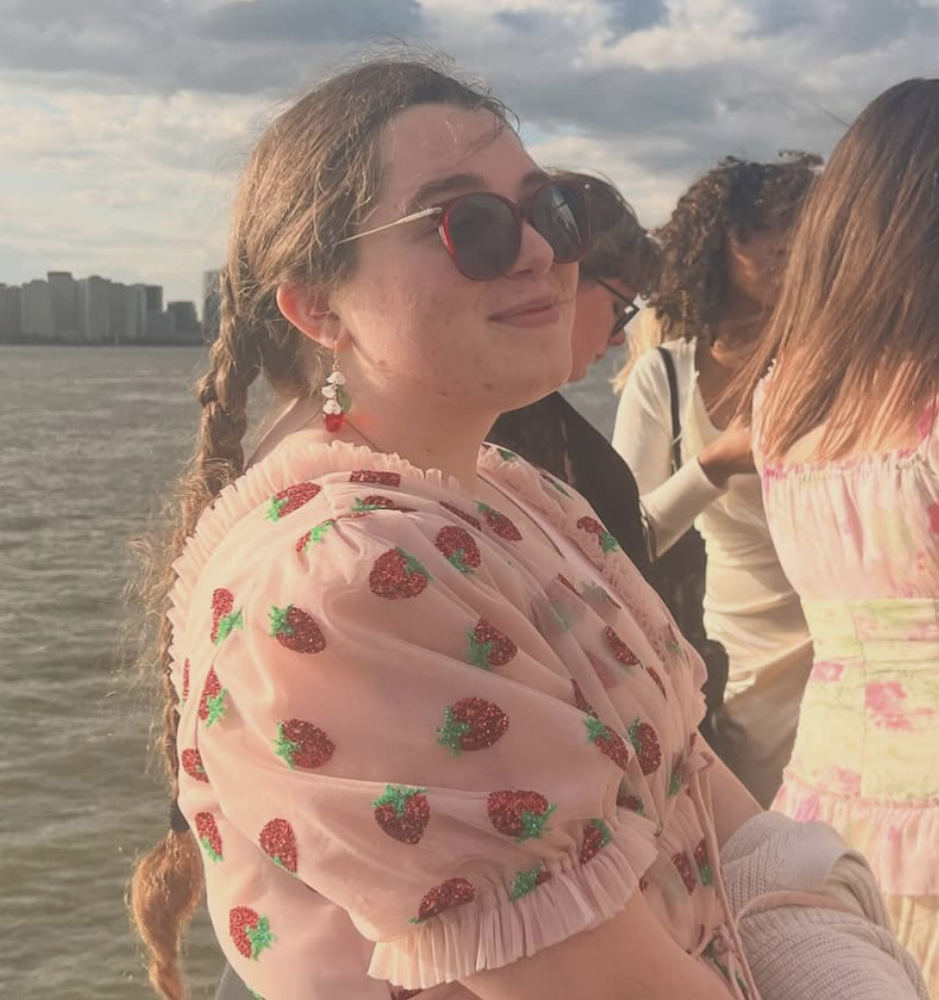
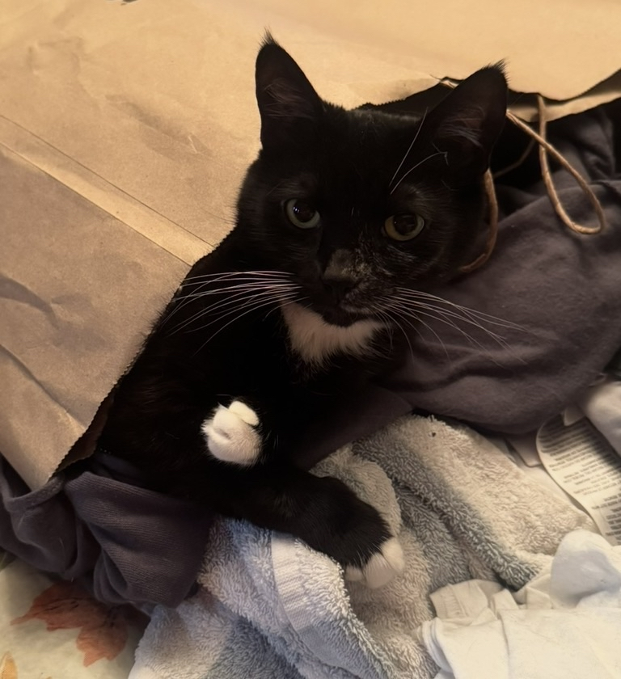
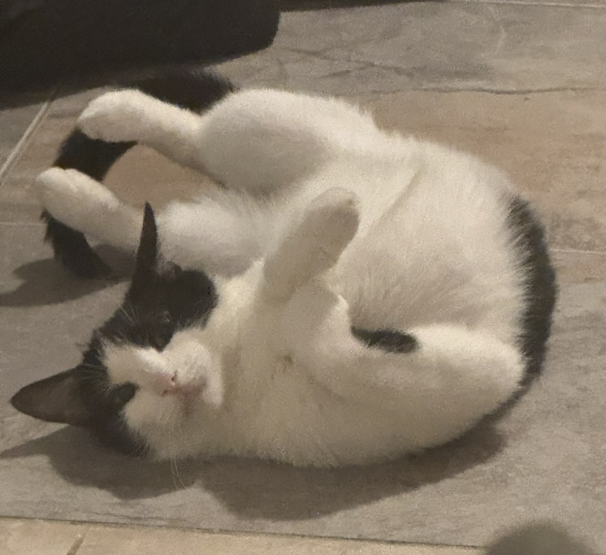
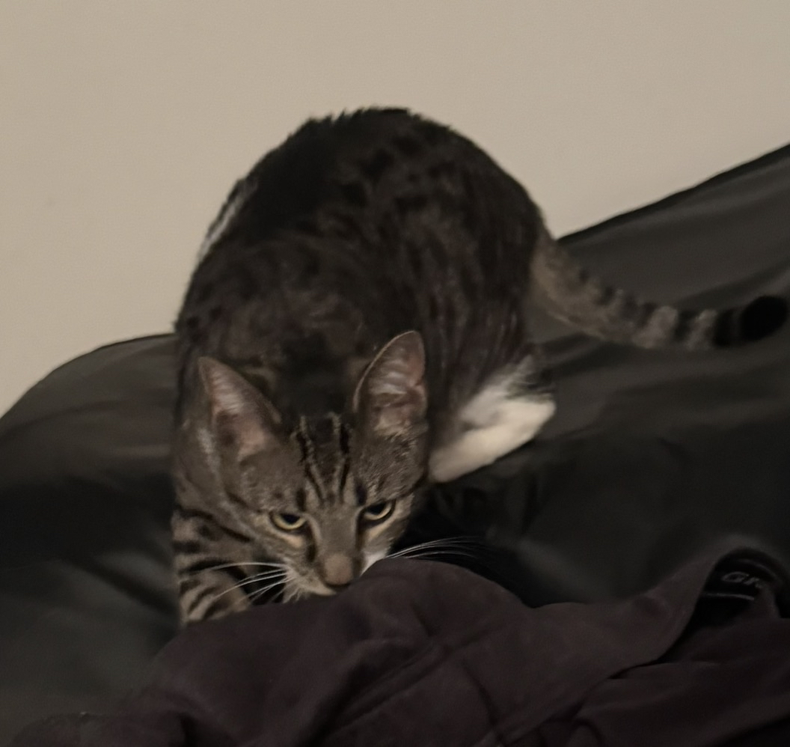

Hello! My name is Grace Muller! I'm a third-year student at Bryn Mawr College majoring in English and Classical Languages. When I'm not pouring over ancient languages, I love to act in the Shakespeare Performance Troupe and sing with my friends in the Extreme Keys acapella group. At home, I have three cats, Chip, Sailor, and Taco. I also love to draw (check out my Artfight!), read, listen to music, crochet, and play video games.